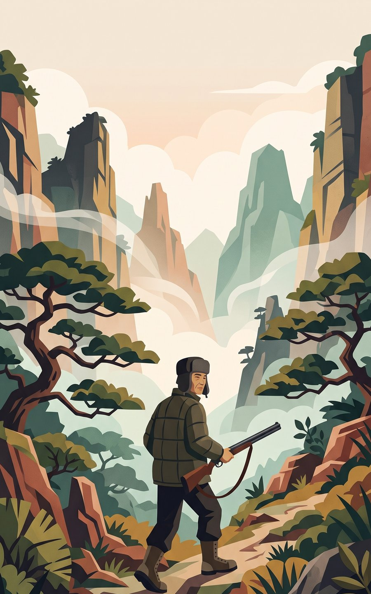
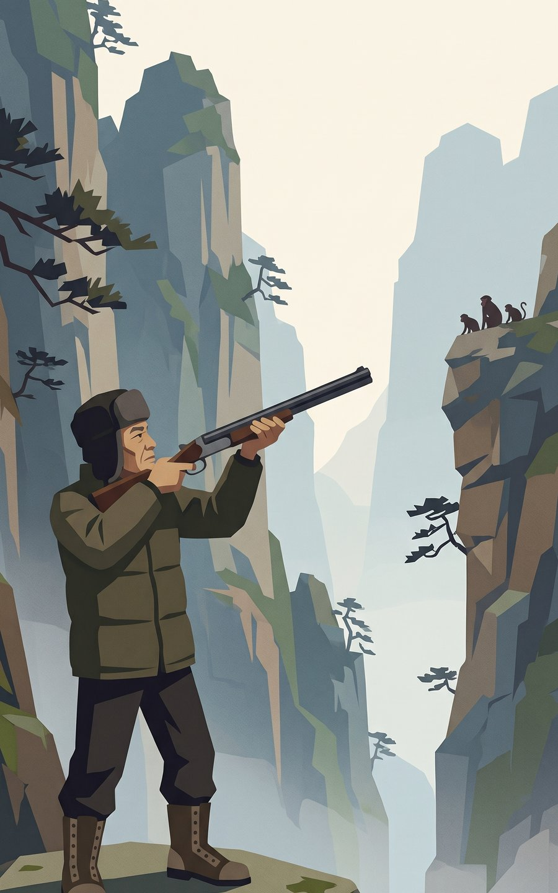
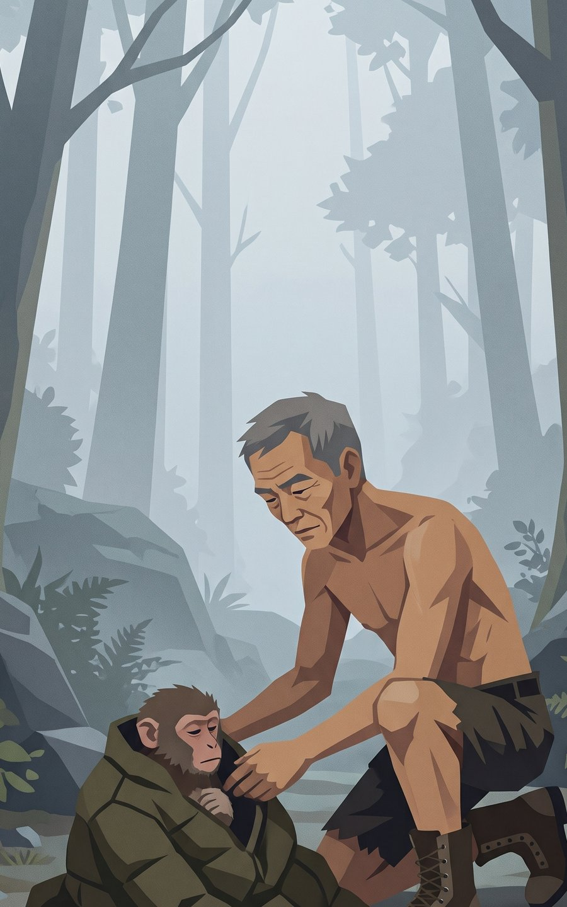
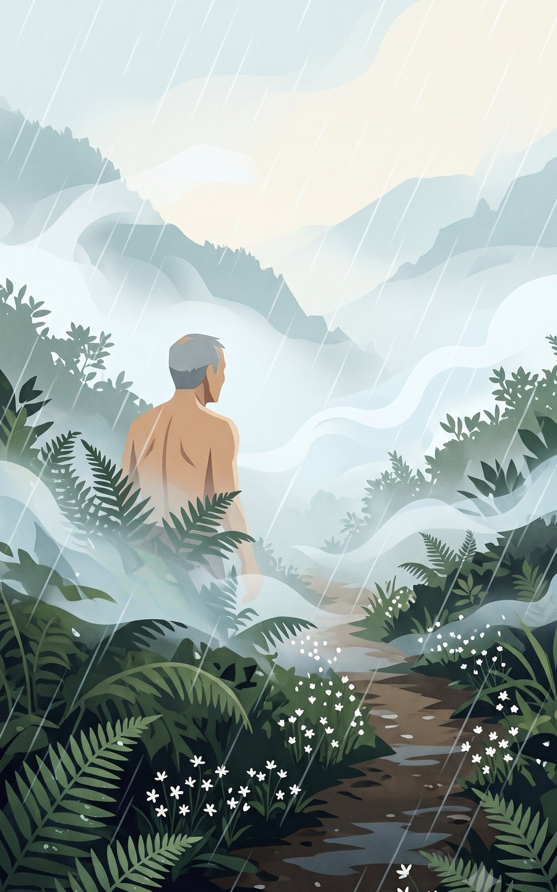

I. Khẩu súng hai nòng
Hiện thân của bạo lực văn minh và thói ngạo mạn chinh phục tự nhiên; bị thu hồi xuống vực sâu.

NGỮ VĂN 12 • ẤN BẢN ĐIỆN TỬ MINH HỌA
Văn học không chỉ là những con chữ nằm yên trên trang giấy, mà là cánh cửa mở ra cuộc đối thoại thầm kín giữa con người với thiên nhiên. Với truyện ngắn “Muối của rừng”, nhà văn Nguyễn Huy Thiệp đã dẫn dắt người đọc bước vào buổi sớm mưa xuân giữa vương quốc đá vôi Nam Xung — nơi chuyến đi săn của một ông lão sáu mươi tuổi hóa thành hành trình gột rửa tâm hồn đầy ám ảnh.
Ấn bản điện tử do Nhóm 3 biên soạn gồm hai trọng tâm: Bản đồ cốt truyện 5 chặng đồng bộ giọng tự đọc (Trang 4–5) và Hành trình đi săn cùng cuộc chuyển hóa lương tri của ông Diểu (Trang 6–13). Mời thầy cô và các bạn kéo nhẹ góc giấy để bước vào khu rừng mùa xuân năm ấy.
“Sau Tết Nguyên đán một tháng là thời gian thích nhất ở rừng. Cây cối đều nhú lộc non. Rừng xanh ngắt và ẩm ướt. Thiên nhiên vừa trang trọng vừa tình cảm. Điều ấy một phần là do mưa xuân.”
— Nguyễn Huy Thiệp, 1986
Nguyễn Huy Thiệp (1950 – 2021) — cây bút truyện ngắn kiệt xuất của văn học Việt Nam thời kỳ Đổi mới, nổi bật với lối viết lạnh lùng, hàm súc và giàu chiều sâu triết lý.
Sáng tác năm 1986, lấy bối cảnh núi rừng đá vôi Nam Xung vào tiết mưa bụi mùa xuân sau Tết một tháng.
Ngôi kể thứ ba hạn tri đặt điểm nhìn chủ yếu vào nội tâm ông Diểu, làm hiện rõ cuộc xung đột giữa bản năng chinh phục và phần người lương thiện.
“Truyện ngắn Muối của rừng mở ra vào tiết mưa xuân một tháng sau Tết...”
“Hành trình đi săn thú rừng trở thành hành trình gột rửa để tìm lại phần Người.”

Rừng dâu da mùa xuân
Sau Tết một tháng, ở tuổi sáu mươi, ông Diểu bước vào rừng với hành trang đầy đủ tiện nghi: mặc áo ấm, đội mũ lông, đi giày cao cổ, mang nắm xôi nếp và khẩu súng hai nòng tuyệt đẹp do người con trai học ở nước ngoài gửi biếu. Khẩu súng ấy tượng trưng cho quyền uy kỹ thuật, khiến ông tự tin nhìn thiên nhiên như lãnh địa riêng để giải trí và chiếm đoạt.
Bắt gặp gia đình ba con khỉ, ông nhắm bắn hạ con khỉ đực đầu đàn. Khi khỉ cái liều mình quay lại cứu chồng, ông lại hằn học buông lời áp đặt lạnh lùng: “Đồ gian dối, mày chứng minh tấm lòng cao thượng hệt như một bà trưởng giả!” — đỉnh điểm của cái nhìn ích kỷ tách biệt con người khỏi muôn loài.
Giữa lúc ông Diểu còn xua đuổi khỉ cái, con khỉ con bất ngờ nhảy xuống túm lấy dây đeo súng kéo lê chạy. Ông hốt hoảng đuổi theo dồn nó tới mép vực Hõm Chết — vùng khe sâu quanh năm sương mù giăng đặc. Hoảng loạn tột độ, khỉ con lăn thẳng xuống vực mang theo khẩu súng hai nòng cùng tiếng kêu thảm thiết dội vào vách đá.
Nỗi kinh hoàng ập tới khiến người thợ săn kiêu hãnh bỏ chạy “như ma đuổi”. Vũ khí bạo lực đã bị rừng sâu thu giữ, để lại vết rạn đầu tiên trong tâm thức ngạo mạn của con người trước quyền năng bí ẩn của tự nhiên.
“Khẩu súng chìm vào sương mù Hõm Chết — uy quyền chinh phục bỗng tan vỡ.”

Vách đá và sương mù Hõm Chết

Khoảnh khắc thức tỉnh lương tri
Cay cú không muốn về tay không, ông cởi giày cao cổ và quần áo ngoài vắt lên chạc cây duối để leo vách đá bắt khỉ đực. Thế nhưng khi chạm vào cơ thể nóng hầm hập và bắt gặp ánh mắt run rẩy cầu xin của con vật, lòng trắc ẩn trỗi dậy mạnh mẽ. Ông vội nhai nắm cỏ Lào đắp cầm máu rồi tự nguyện cởi chiếc quần lót duy nhất băng vết thương cho nó.
Đường xuống bất ngờ núi lở cuốn mất cây duối treo quần áo; còn mũ lông và nắm xôi dưới lùm cây cũng bị đống mối đùn đất đỏ au làm nát. Thấy khỉ cái kiên trì bám theo chồng, ông ngộ ra: “Ở đời, trách nhiệm đè lên lưng mỗi sinh vật quả thật nặng nề!” và lặng lẽ thả khỉ đực về rừng.

Mưa xuân & Hoa tử huyền
“Hoa này màu trắng, vị mặn, bé bằng đầu tăm... Khi rừng kết muối, đấy là điềm báo đất nước thanh bình, mùa màng phong túc.”
Hiện thân của bạo lực văn minh và thói ngạo mạn chinh phục tự nhiên; bị thu hồi xuống vực sâu.
Không gian ranh giới sinh – tử buộc kẻ đi săn đối diện nỗi sợ và sự trả giá từ lỗi lầm.
Thiên nhiên xóa sạch dấu tích giả tạo, trả con người về hình hài nguyên sơ, thuần hậu.
30 năm mới nở một lần — phần thưởng thiêng liêng cho lòng thiện lương và hòa bình.
“Mưa xuân dịu dàng nhưng rất mau hạt. Ông Diểu cứ trần truồng như thế, cô đơn như thế mà đi.”
“Bước vào rừng sâu với khẩu súng hai nòng kiêu ngạo, nhưng lại trở về tay trắng giữa làn mưa xuân ấm áp. Khi lớp vỏ vật chất phù phiếm bị tước bỏ, lòng trắc ẩn nở hoa như loài tử huyền ba mươi năm mới kết muối một lần.”
Hướng dẫn dành cho Nhóm 3:
.mp3 hoặc .m4a) bên dưới.tom-tat.mp3 và đặt vào thư mục audio/.